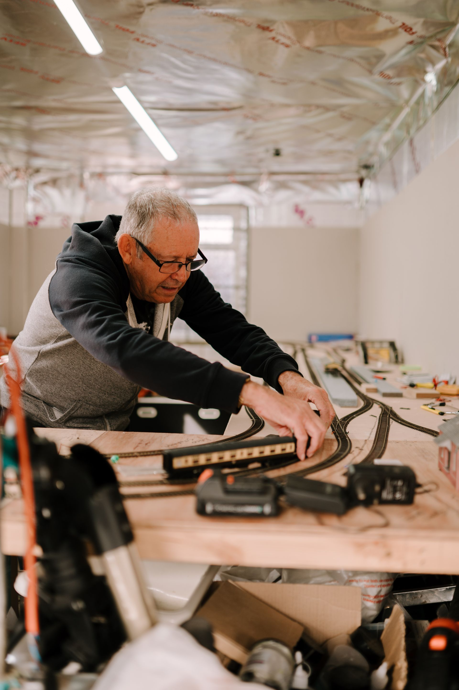

Musée du Modélisme Ferroviaire
et des Chemins de fer
du Québec
Le musée est présentement fermé

Bienvenue
À Drummondville, ce musée passionne petits et grands avec ses réseaux miniatures animés, ses maquettes de gares régionales, et sa collection d'objets ferroviaires. Il raconte aussi l'histoire du développement des transports au Québec.
Réserver ma visiteLes prochains événements
-

Journée des petits cheminots
Une fois par année, au printemps
En savoir plus -

Atelier maquettes
Le premier samedi de chaque mois
En savoir plus